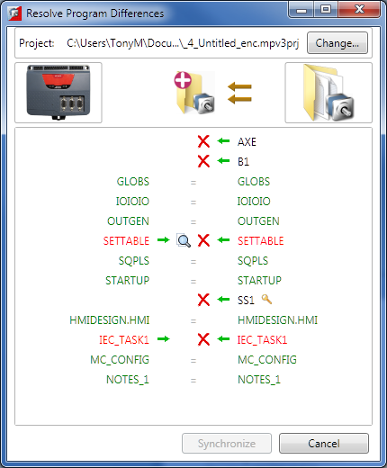
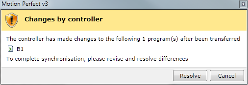
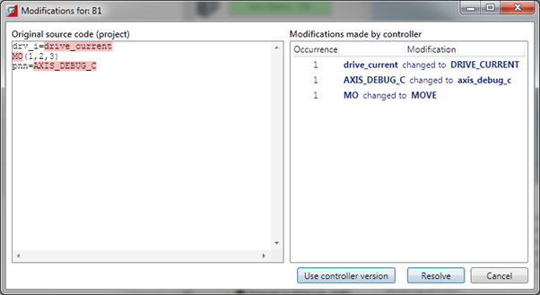
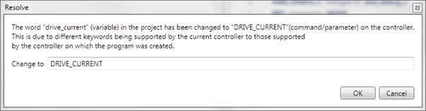
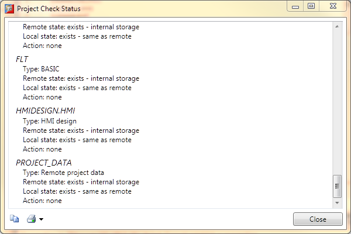

Project Check
A project check is performed every time
Motion Perfect
connects in "Sync Mode" and if the user initiates a project check
from the main menu. The programs in the project are checked against those on
the controller and if there are any differences the "Resolve Program
Differences" dialog is displayed so the user can resolve the differences.

Resolving
differences
The "Resolve Program Differences" dialog can
perform several different operations to resolve differences.
|
|
|
|
Change
|
Change to a different project
|
|
|
Create a new empty project
|
|
|
Make the contents of the project the same as that in
the controller
|
|
|
Make the contents of the controller the same as that in
the project
|
|
|
Copy a program from the controller to the project
|
|
|
Copy a program from the project to the controller
|
|

|
Delete a program (from the project or controller or
both)
|
|
|
Use the file-compare/merge tool (specified in synchronization
section of the
Project Options
) to examine
the differences between the copy of a program on the controller and the one
in the project and optionally to make changes to the file in the project
(which will then be loaded onto the controller).
|
The synchronization operation is carried out when the user
clicks on the "Synchronize" button which is only enabled
Once a set of operations has been selected which will
resolve all differences.
The synchronization operations available depend on the types of
program in the project and on the controller.
Encrypted programs are tagged with a small key icon
and
can be copied from the project (PC) to the controller (as long as the user is
in possession of the appropriate key, but not from the controller to the
project (PC).
It is possible that a program copied from the project onto the
controller will still cause a project check failure if the controller supports
different keywords to those supported by the controller on which the program
was written. This problem can be resolved by saving the copy on the controller
into the project or manually resolving the differences.
There may be and entry "PROJECT_DATA". This is a file
which contains project specific data such as axis names and I/O line
descriptions. Differences can be resolved in the normal way.
Problems Loading Programs
Even though it appears that differences can be resolved by
loading the project or some of its programs onto the controller it is still
possible to get a mismatch between the controller and the project. This is
usually due to different TrioBASIC keywords being supported on the controller
to those supported on the controller on which the program was written. This can
cause variables to become keywords, keywords to become variables or keywords to
change.
All the letters in a keyword are always upper case whereas all
the letters in a variable name are always lower case.
When this occurs a warning dialog will be displayed to show
that the controller has made changes to the program.

The user now has the choice of resolving the differences
using the program modifications dialog or cancelling. If you cancel it is then
possible to resolve differences by doing another project check and manually
resolving the differences using the "
Resolve
Differences
" tool.
Modifications Dialog

This shows the original program source (on the PC) on the
left and the changes made to it on the right. The user can resolve the differences
by either using the controller version of the program or by clicking on the
"Resolve" button which steps through the differences to allow the
used to make a decision for each one using the "Resolve" dialog.
Resolve Dialog

The new value for the word to resolve is automatically
filled in using the value obtained from the controller. The user can type any
valid keyword, variable name, or number to replace the word in the source file.
Clicking on "OK" makes the change and clicking on "Cancel"
cancels the whole resolution process.
Project Check Status Window

After the project check has completed the “Project Check
Status” window is displayed. This shows information about the contents of the
project and the project check operation. The contents of the Window can be
saved to the clipboard for inclusion in an external document or printed. This
feature helps provide documentary proof that the correct project has been
loaded as is often required for machines operation in safety critical
circumstances.